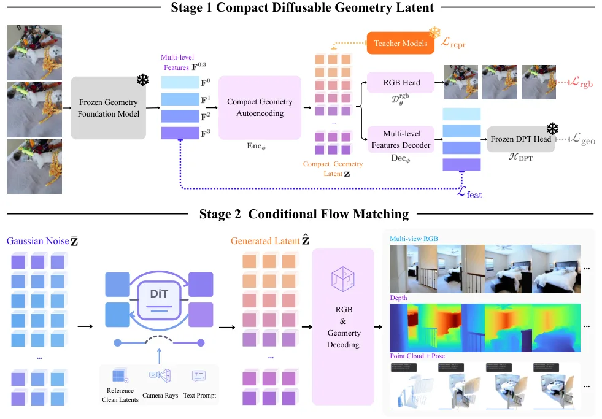
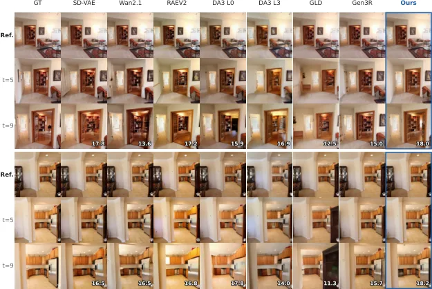
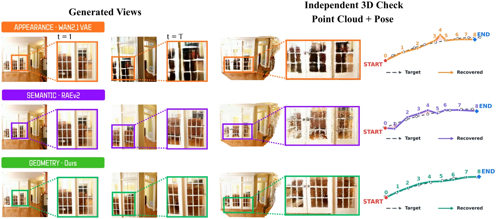
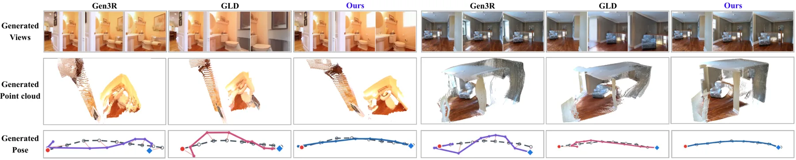
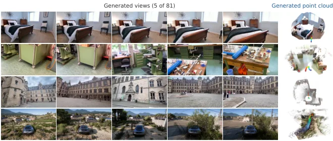

GAE：用于 3D 一致世界生成的几何原生潜空间
GAE: Learning a Geometry-Native Latent Space for 3D-Consistent World Generation
在 RealEstate10K 与 DL3DV 上，替换生成 latent 后 FVD 分别下降 12.7% 与 23.1%，且 RealEstate10K 相机轨迹误差减半。
作者、单位与技术谱系 · Research context
作者与单位
研究脉络
- geometry foundation model方法基座关系：GAE 直接重参数化几何 foundation model 的特征。[arXiv 官方 HTML v1]
- appearance-centric generation latent方法上游关系：论文把传统外观中心 latent 作为对照，并推进到可解码几何状态。[arXiv 官方 HTML v1]
合作网络
- GAETencentARC → geometry-native autoencoder关系：官方项目/代码[arXiv 官方 HTML v1]
- GAERealEstate10K / DL3DV → GAE关系：公开实验依赖[arXiv 官方 HTML v1]
作者和单位是原文事实；技术脉络是基于公开原文/项目关系的解读；未据此推断导师或师生关系。
方法本质拆解 · What actually changed
是不是微调？
论文训练 geometry-native autoencoder，并在固定 generator/training protocol 的受控比较中替换 latent。它不是仅在推理时对生成帧做几何后处理。
有没有额外约束？
latent 的联合可解码目标把 appearance、depth、camera 和 point map 作为结构化几何约束。约束发生在表示学习与解码接口，而不是传统 BA 的显式因子。
推理/后端到底做了什么？
conditional flow 直接在 GAE latent 上生成，随后解码多种几何/外观输出。论文的关键变化不是新增全局优化，而是改变生成器所接收的状态空间。
方法本质是什么？
把几何 foundation feature 压缩成可生成、可多头解码的共享 latent，使跨视角关系在生成前就被编码。直接效果是改善视觉质量和独立测量的 3D coherence。
几何基础特征 + 联合可解码 latent + conditional flow 生成 → 更好的跨视角外观与 3D 一致性。

动机与问题Motivation
动机与问题
外观中心的生成 latent 可以生成逼真帧，却不保证同一场景跨视角一致。论文把问题归因于表示层缺少几何结构，而不是只增加一个几何输出头。
方法Method
方法总览
先将 geometry foundation model 的特征重参数化为 geometry-native autoencoder latent，再联合解码多种几何/外观变量。固定 generator 与训练协议后，用 GAE latent 替换原 latent 来测 3D coherence。
关键技术细节
latent 可解码为 appearance、depth、cameras、point maps，形成感知与生成之间的共享接口。conditional flow 在该紧凑状态上工作，因此几何一致性由表示本身传递，而非后处理对每帧单独修补。

实验Experiments
实验设置
论文在 RealEstate10K 与 DL3DV 做受控比较，固定 generator 和 training protocol，评估 FVD 与 camera-trajectory error，并独立测量 3D coherence。数据集和指标来自官方 HTML 摘要与实验章节。
实验数字与比较
RealEstate10K 上 FVD 下降 12.7%，DL3DV 上下降 23.1%；RealEstate10K 的 camera-trajectory error 减半。论文还报告替换 latent 后视觉质量与独立 3D 一致性同时提升，具体基线表格待进一步核验。
消融/失败边界
核心对照是保持 generator/training protocol 不变、只替换 latent；去掉几何原生 latent 就回到 appearance-centric latent，3D coherence 收益消失。潜空间容量、几何基础模型偏差、视角跨度和 flow 训练分布是主要边界。
局限与迁移Limitations & Transfer
局限与待核验
论文证明的是受控 latent replacement 的收益，尚不能直接等同于任意生成器或真实机器人世界模型的几何可靠性。跨数据集、长时序物理一致性、相机姿态绝对尺度和计算成本仍待核验。
与你研究路线的关系
可迁移模块是把 camera/point-map/depth 作为共享状态接口，而不是彼此孤立的辅助头。下一步可在导航或 SLAM 场景中测试该 latent 对观测不确定性、尺度漂移和闭环规划的影响。
{kind=link}

{kind=link}

{kind=link}

{kind=link}
